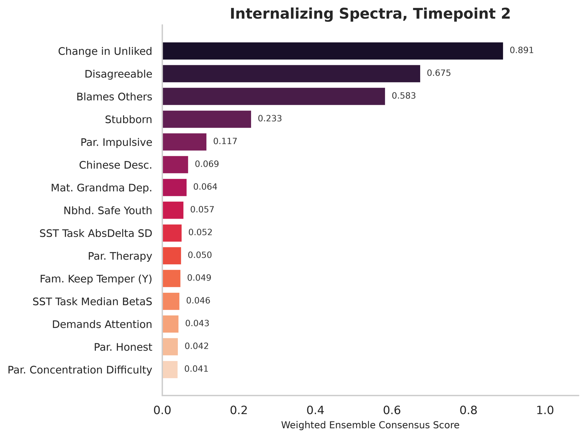

Quickstart¶
The repository ships a fully simulated panel (data/simulated/) with the same columns and five-wave structure as the analysis file. Its columns are drawn independently, so nothing in it is predictable. bpsp example-panel resamples it and plants a known signal at wave T2 in four predictors (bpsp.simulation), which gives the demo a correct answer to recover.
Command line¶
bpsp example-panel outputs/example_panel.csv
bpsp run configs/demo.yaml
This runs setup (registry, circularity exclusions, preprocessing, model configuration) and the stages listed in the config, writing tables, figures, run.log and the resolved configuration to outputs/demo/. In run.log, the ensemble's held-out R² for internal_D_p should be about 0.42, and the four planted predictors (Change in Unliked, Blames Others, Stubborn, Disagreeable) should head "Top Features by Weighted Consensus".

Weighted consensus feature importance from the quickstart notebook, on a simulated panel in which four predictors carry the signal. The pipeline ranks them first. Simulated data, not a result of the article.
Two warnings near the start are expected with the simulated panel. It lacks 24 variables that the registry lists, mostly parent self-report items ("columns were not found in the dataset and have been dropped"), and some of its columns are more than 70% missing at T2, so they are dropped (the message says "Dropped columns at t = 2 due to entirely missing data"). The adjusted R² column of the metrics table is empty in the demo, because the demo has fewer test rows than predictors (see Methods in brief).
Run other stages, or override the output directory:
bpsp run configs/demo.yaml --stages main,networks,base_learners --output-dir outputs/try2
bpsp stages # list every stage
bpsp init-config my_run.yaml # a config file with every setting at its published default
Python¶
from bpsp import Pipeline, PipelineConfig, ctx
cfg = PipelineConfig.from_yaml("configs/demo.yaml")
cfg.main.target_options = "internal_D_p"
cfg.main.split = "across_categories"
cfg.main.tp_option = "2"
pipe = Pipeline(cfg)
pipe.run(["main", "base_learners"])
ctx.metrics_dict_full # held-out metrics per base learner and the ensemble
ctx.consensus_df # consensus feature importance
ctx.X_train.shape # the exact training matrix used
pipe.timings # seconds per stage
Stages can also be run one at a time, which mirrors running notebook cells:
pipe = Pipeline(cfg)
pipe.setup()
pipe.run_stage("main")
pipe.run_stage("nested_cv")
With ABCD data¶
- Obtain ABCD data under an approved Data Use Certification (see Data access). The article used Release 5.1.
- Build the merged multi-wave panel with the extraction code in abcd-visualizations-and-data.
- Point
setup.DATA_PATHat that file (outside this repository) and choose stages and targets in a config file.